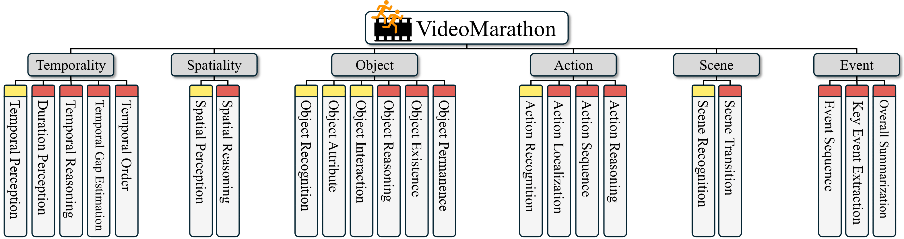

Recent long-form video-language understanding benchmarks have driven progress in video large multimodal models (Video-LMMs).
However, the scarcity of well-annotated long videos has left the training of hour-long Video-LLMs underexplored.
To close this gap, we present VideoMarathon, a large-scale hour-long video instruction-following dataset.
This dataset includes around 9,700 hours of long videos sourced from diverse domains, ranging from 3 to 60 minutes per video.
Specifically, it contains 3.3M high-quality QA pairs, spanning six fundamental topics: temporality, spatiality, object, action, scene, and event.
Compared to existing video instruction datasets, VideoMarathon significantly extends training video durations up to 1 hour, and supports 22 diverse tasks requiring both short- and long-term video comprehension.
Building on VideoMarathon, we propose Hour-LLaVA, a powerful and efficient Video-LMM for hour-scale video-language modeling.
It enables hour-long video training and inference at 1-FPS sampling by leveraging a memory augmentation module, which adaptively integrates user question-relevant and spatiotemporal-informative semantics from a cached full video context.
In our experiments, Hour-LLaVA achieves the best performance on multiple long video-language benchmarks, demonstrating high quality of VideoMarathon dataset and superiority of Hour-LLaVA model.
VideoMarathon is a long video instruction-following dataset with a total duration of around 9,700 hours, consisting of 3.3M QA pairs across 22 tasks. The task taxonomy and the statistics of the VideoMarathon are shown as follows:
Figure 1: VideoMarathon: A diverse long video instruction-following dataset. (a) The dataset contains 22 diverse tasks, covering both short-form (yellow tag) and long-form (red tag) comprehension. (b) The dataset spans diverse video source domains. (c) The dataset features a wide range of question types for long-form video-language modeling. (d) The dataset consists of long videos ranging from three minutes to one hour. (e) The dataset includes complex video content reflected by the number of events per video.
In Table 1, the comparison between our VideoMarathon and other existing video instruction-following datasets shows that VideoMarathon features a significantly longer average video length, broader duration range, and a larger number of QA pairs.
| Dataset | Captioner | Summarizer | Total Video Time | Average Video Length | Duration Range | #OE QA | #MC QA |
|---|---|---|---|---|---|---|---|
| LLaVA-Hound | GPT-4V | GPT-4 | 3K hrs | 0.2 mins | 0–8 mins | 900K | 0 |
| ShareGPT4Video | GPT-4V | GPT-4 | 0.2K hrs | 0.3 mins | < 2 mins | 0 | 0 |
| LLaVA-Video-178K | GPT-4o | GPT-4o | 2K hrs | 0.6 mins | < 3 mins | 960K | 196K |
| VideoMarathon | Qwen2VL-7B | DeepSeek-V3 | 9.7K hrs | 20.9 mins | 3–60 mins | 1.73M | 1.57M |
Powered by memory augmentation, we propose Hour-LLaVA, an efficient video-language model capable of modeling hour-long videos at 1 FPS. It comprises three key modules: a video encoder, a memory augmentation module (i.e., MemAug), and an LLM decoder. Figure 2 shows the Hour-LLaVA framework, with the video encoder omitted for simplicity.
Figure 2: Overview of the Hour-LLaVA Framework. Input video features \( \mathbf{H}_\text{v} \) encoded from 1-FPS sampled frames are selectively decayed spatially and temporally through a forgetting mechanism, producing decayed video tokens \( \tilde{\mathbf{H}}_\text{v} \) for efficient video modeling. Meanwhile, full video features \( \mathbf{H}_\text{v} \) are stored in a memory repository. Given the decayed tokens \( \tilde{\mathbf{H}}_\text{v} \) and a user question tokens \( \mathbf{H}_\text{q}\), the MemAug module enhances them with full video context and user question-relevant details from the memory repository, obtaining memory-augmented video tokens \( \hat{\mathbf{H}}_\text{v} \). These augmented tokens are then passed with the original user question tokens \( \mathbf{H}_\text{q} \) into the LLM decoder to generate the final response \( \mathbf{X}_\text{a} \).
We evaluate our models on four mainstream video-language benchmarks: TempCompass, LongVideoBench, Video-MME, and LVBench. As shown in Table 2, Hour-LLaVA consistently achieves the best performance on these four benchmarks in both the 3B and 7-8B model size categories.
| Method | LLM Params |
Input Video |
TempCompass | LongVideoBench | VideoMME (w/o & w/ subtitles) | LVBench | ||
|---|---|---|---|---|---|---|---|---|
|
M-Avg 11s |
M-Avg 459s |
Overall 1021s |
Medium 516s |
Long 2466s |
Avg 4037s |
|||
| Proprietary LMM | ||||||||
| GPT-4V | – | 10 frames | – | 61.3 | 59.9/63.3 | 55.8/59.7 | 53.5/56.9 | – |
| GPT-4o | – | 384 frames | 70.9 | 66.7 | 71.9/77.2 | 70.3/76.6 | 65.3/72.1 | 48.9 |
| Gemini 1.5 Flash | – | 0.5/1 fps | – | 61.6 | 70.3/75.0 | 68.8/74.7 | 61.1/68.8 | – |
| Gemini 1.5 Pro | – | 0.5/1 fps | 69.3 | 64.0 | 75.0/81.3 | 74.3/81.0 | 67.4/77.4 | 33.1 |
| Open-source LMM (<7B) | ||||||||
| ViLMA-1.5-3B | 3B | 8 frames | 56.1 | 42.9 | 42.2/44.2 | – | – | – |
| Phi-3.5-Vision-4.2B | 4.2B | 16 frames | – | – | 50.8/– | – | – | – |
| LongVU-3.2B | 3.2B | 1 fps | – | – | –/51.5 | – | -/47.2 | – |
| InternVL2.5-2B | 2B | 64 frames | 53.4 | 46.0 | 51.9/54.1 | – | – | – |
| Apollo-1.5B | 1.5B | 2 fps | 60.8 | 54.1 | 53.0/54.6 | – | – | – |
| Apollo-3B | 3B | 2 fps | 62.5 | 55.1 | 58.4/60.6 | – | – | – |
| LLaVA-Video-3B† | 3B | 64 frames | 63.4 | 55.2 | 58.7/60.7 | 55.2/57.3 | 47.0/49.9 | 41.7 |
| Hour-LLaVA-3B (ours) | 3B | 1 fps | 63.6 | 57.8 | 60.6/66.7 | 59.0/65.4 | 52.1/60.4 | 44.7 |
| Open-source LMM (7-8B) | ||||||||
| Video-LLaVA | 7B | 8 frames | 37.9 | 39.1 | 39.9/41.6 | 38.0/40.7 | 36.2/38.1 | – |
| VideoChat2 | 7B | 16 frames | 51.1 | 39.3 | 39.5/43.8 | 37.0/39.4 | 33.2/39.2 | – |
| ShareGPT4Video | 8B | 16 frames | 59.4 | 41.8 | 39.9/43.6 | 36.3/39.3 | 35.0/37.9 | – |
| VideoLLaMA2 | 7B | 16 frames | – | 51.4 | 47.9/50.3 | 37.0/39.4 | 33.2/39.2 | – |
| Video-XL | 7B | 1 fps | – | 50.7 | 55.5/61.0 | – | – | – |
| Kangaroo | 8B | 64 frames | 62.5 | 54.8 | 56.0/57.6 | 55.3/55.4 | 46.7/49.3 | 39.4 |
| LongVA | 7B | 128 frames | – | – | 52.6/54.3 | 50.4/53.6 | 46.2/47.6 | – |
| LongVILA | 7B | 256 frames | – | – | 60.1/65.1 | 58.3/64.9 | 53.0/57.4 | – |
| LongVU | 7B | 1 fps | – | – | –/60.9 | – | -/59.5 | – |
| Apollo-7B | 7B | 2 fps | 64.9 | 58.5 | 61.3/63.3 | – | – | – |
| LLaVA-Video-7B | 7B | 64 frames | 64.3† | 58.2 | 63.3/69.7 | 58.9/62.9† | 53.0/55.0† | 42.2† |
| Hour-LLaVA-7B (ours) | 7B | 1 fps | 68.1 | 60.4 | 63.6/70.2 | 63.8/70.0 | 55.0/65.1 | 45.6 |